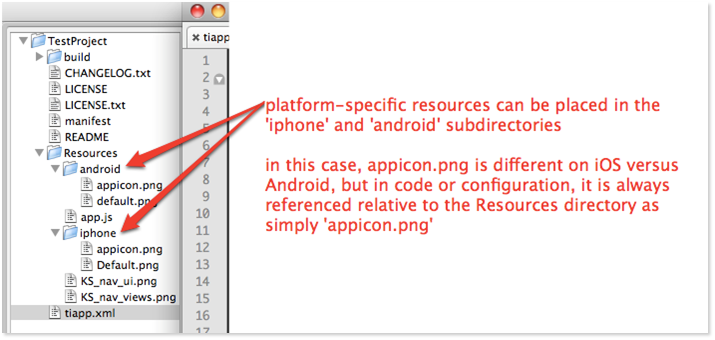
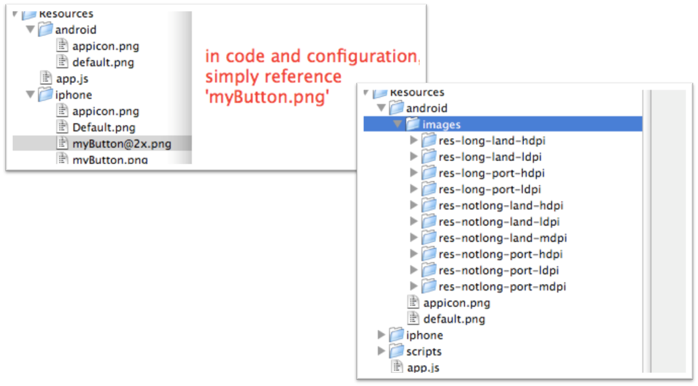
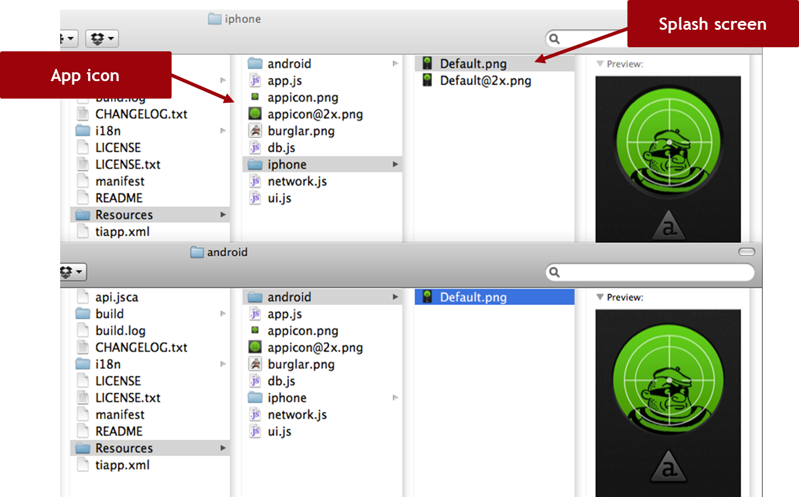
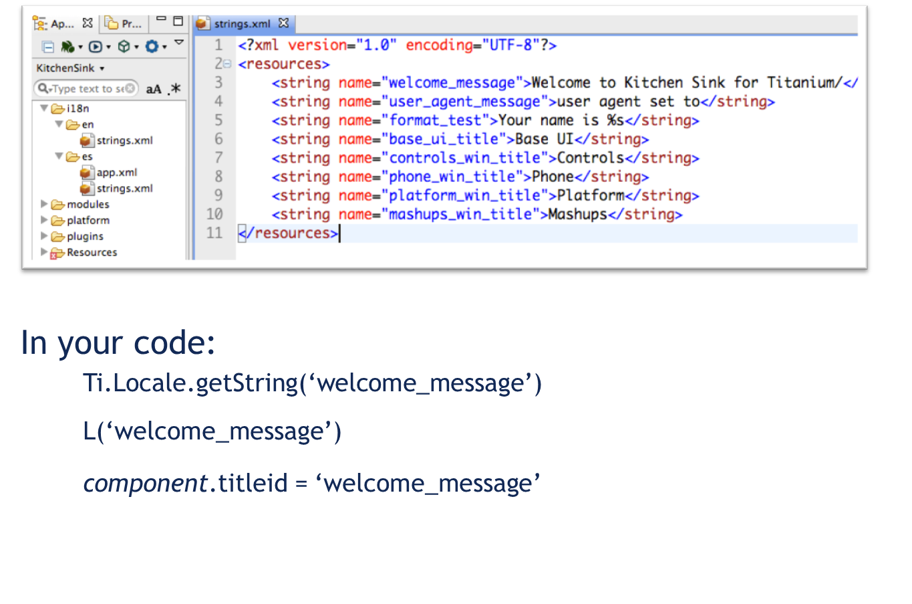

Cross-Platform JavaScript Applications
Building Native Mobile Apps With Appcelerator Titanium
AGENDA
- Building JavaScript applications for Titanium
- Coping with (and taking advantage of) different platforms
- Cross-platform techniques in action
- Introducing TiBountyHunter (Lab)
Large JavaScript Applications
For many developers, Titanium Mobile may be their first large JavaScript app
Procedural JavaScript (like random Ajax or UI on a web page) won't cut it
Need to adhere to some baseline best practices:
- Protect the global scope
- Be modular (mix of OO and module pattern)
- Need to strive to keep code DRY
Writing Rich Client Applications
Similar in spirit to single-page web applications
Rich Clients share characteristics:
- Sophisticated UI controls
- Client-side data models
- Local storage and focused remote data access
Component Oriented, Event Driven (more later)
The Titanium JavaScript Environment
V8/Rhino or JavaScriptCore interpreters
Code runs in an "execution context", similar to the single JS thread in the browser (more soon)
app.js defines the root application context
Most of the time, one context is okay
Structuring JavaScript Code
Goals:
- Ease of writing, maintaining, and updating
- Support team development
- Performance
- Avoid name collisions
- Windows with URL properties
- Ti.include()
- CommonJS require()
Usage Demos
Don't extend Titanium proxies
General rule: don't add properties or methods to Titanium objects (Ti.App, Ti.API, Ti.UI.*)
Critical: don't use "get/set" in methods you add
You can't override built-in methods and properties
(But, it's usually okay to add a property or two)
Namespaces
JavaScript shares a single global namespace
Namespace your variables to:
- Prevent collisions
- Provide discrete "containers" for variables & other identifiers
- Follow the model of Titanium --
Ti namespaces: Titanium.UI, Titanium.App, Titanium.API, etc.
var MyApp = {}; // create an object, serves as app's single global variable
MyApp.someproperty = 'foo';
MyApp.somefunction = function() {};
MyApp.DB = {}; // a 'sub-namespace' for specific, related functionality
CommonJS Considerations
- Modules have their own global namespaces
- No access to the calling context's namespace
- Return properties and methods you specify
- Others are 'private'
So what does a sane app look like?
app.js is your bootstrap file
Defines app's name space
Requires in the app's files
Creates and opens the first UI component
var myapp = {}; // define your app's namespace
myapp.someproperty = 'foo'; // runtime variables are stored w/in myapp
myapp.ui = {}; // sub-namespace for our UI-related properties/methods
myapp.ui.mainWindow = require('ui/mainWindow').init();
// you can pass data to modules should you need to
myapp.ui.mainWindow.add(require('ui/someComponent').init(myapp.someproperty));
myapp.ui.mainWindow.open(); // open our app's main UI component
So what does a sane app look like?
Or take it even further...no global variables!
(function() {
var myapp = {}; // define your app's namespace
myapp.someproperty = 'foo'; // runtime variables are stored w/in myapp
myapp.ui = {}; // sub-namespace for our UI-related properties/methods
myapp.ui.mainWindow = require('ui/mainWindow').init();
// you can pass data to modules should you need to
myapp.ui.mainWindow.add(require('ui/someComponent').init(myapp.someproperty));
myapp.ui.mainWindow.open(); // open our app's main UI component
})();
CommonJS modules implement app functionality
// file is mainWindow.js
var foo = 'bar'; // this is a local variable
// anything assigned to exports is sent back to calling context
exports.init() {
// require in other modules as needed
var uiprefs = require('ui/uiprefs'); // maybe an app-wide preferences dictionary
return Ti.UI.createWindow({
backgroundColor: uiprefs.windowBGColor
});
};
Modules as Constructors
// file is Button.js
// creates a UI component we'll need many copies of
var Button = function(title) {
return Ti.UI.createButton({ title: title });
};
module.exports = Button; // return the constructor
// how to use it
var Button = require('ui/Button');
// now make some instances
var button1 = new Button('foo');
var button2 = new Button('bar');
Cross-Platform in Titanium
Cross-platform !== "Write Once, Run Everywhere"
Titanium is "Write Once, Adapt Everywhere"
We should be building "Best of Breed" apps
Non-visual code and much UI code can be 100% portable
Accept and embrace platform differences
Platform-Specific Examples
Android: intents, background services, hardware menu button
iOS: pre-built animations, Cocoa UI
Platform-specific APIs are implemented in a platform-specific namespace
Mobile Web
Native vs. Web app vs. Hybrid
What Mobile Web Can Do
What Mobile Web Can't Do
Supported Browsers and Limitations
Developing for Multiple Platforms
Titanium API provides a platform variable that can be used with if statements
Platform-specific resources:
- Code files
- Images, text, and any other file type
Platform configuration in tiapp.xml
Platform Name
Use the platform name to branch:
var isAndroid = false;
if(Ti.Platform.osname == 'android') {
isAndroid = true;
// some other Android-specific code here...
}
Use with JavaScript's ternary operator
var win = Ti.UI.createWindow({
backgroundColor: (isAndroid) ? 'green' : 'blue'
});
// is equivalent to
if(Ti.Platform.name == 'android') {
var win = Ti.UI.createWindow({
backgroundColor: 'green'
});
} else {
var win = Ti.UI.createWindow({
backgroundColor: 'blue'
});
}
Platform-Specific Resources

Resolution-Specific Resources

Icons and splash screens

Internationalization
Platform-specific functionality is broken out into sub-namespaces where appropriate

Q&A
Introducing TiBountyHunter
Demo app from Head First Series (good book)
863 lines of low level, single platform Objective-C
We will write a more complete, cross-platform app in less than 50% of the code

Lab Goals
Create the foundation for a localizable, cross-platform application
Set up JavaScript code framework
Become familiar with foundational JavaScript coding techniques
iBountyHunter demo, Lab Demo
wiki.appcelerator.org/display/td/215+Cross+Platform+Mobile+Development+in+Titanium